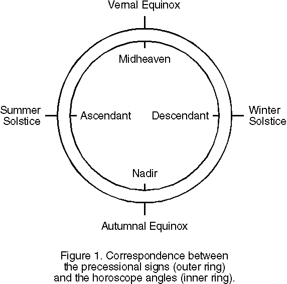
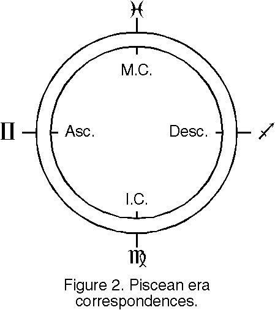
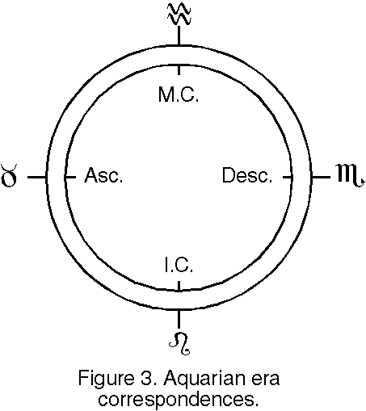
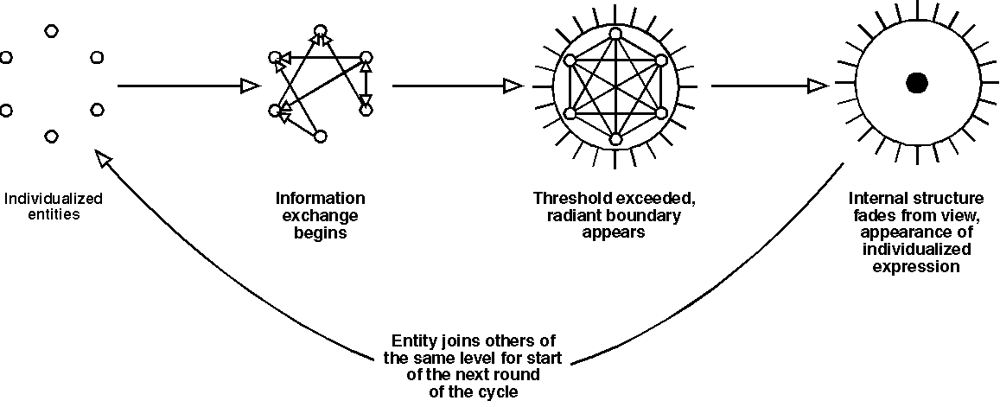

Copyright 1993, 1994 by Benjamin Rowe
Permission is granted to distribute this work in electronic form, with the these conditions:
1) No fees may be charged for the distribution or transmission of this document, other than standard charges for use of transmission lines or electronic media. Distribution for commercial purposes or by commercial entities is specifically prohibited.
2) All copies distributed must contain the complete, unedited text of the original document and this copyright notice.
3) Persons acquiring the electronic version of this document may make one printed copy for their personal use.
All other rights are retained by the author.
This paper is a work-in-progress that may never be finished. In the course of writing it, I have found myself, time after time, in a situation that might be called "awash in correspondences." The options, the possibilities for taking the subject in different directions, have been too many to handle; narrowing them down enough to finish it seems beyond my capability at present.
Nevertheless, even in its current (admittedly sketchy and unbalanced) form, I feel it has many points that will be of interest to those interested in the broader magickal context within which our personal inititatory work is taking place. While the general approach of the work is astrological in tone, the content is intended for magicians.
In our Western culture and its ancestors in Europe, the Middle East, and northern Africa, the precession of the equinoxes has consistently been accompanied by shifts in the encompassing definition of humanity's relationship to the universe at large, what we might call the world-view of the era. This definition has had a profound impact on the direction of cultures within its influence. The development of human thought becomes focused into particular lines; other lines of thought are excluded from general acceptance. A corresponding change is seen in the activities and social structures adopted by the affected cultures.
Astrologers and magicians have generally assumed that the sign of the vernal equinox alone defines an era's world-view. A closer examination shows this assumption is inadequate; the other three signs in the same zodiacal cross must be taken into consideration. Additionally, the planets "ruling" and "exalted" in the signs have a significance equal to that of the signs themselves.
The four signs of an era's zodiacal cross take on, for the culture as a whole, something of the same function that is served by the four "angles" or cardinal points in an individual's horoscope. Figure 1 shows the overall correspondences between the two groups.
At first this arrangement might appear counterintuitive.
Astrologically, the equinoctial axis and the horoscope's ascendant-descendant axis both divide the sphere of the heavens into "light" and "dark" halves. It would be reasonable to think that there would be an identity between them in any set of correspondences. However, observations of historical and currentday events do not support the assumption. Instead, the sign of the vernal equinox takes on the aspect of the midheaven angle.

For an individual, the midheaven is literally the point over their head at the time of birth. It is the high point of an axis going from space to the center of the earth directly through their body. The powers of the larger cosmos enter into them along this axis. Their perception of their goals in life, their image of what they can become in their perfection, and the way in which they can unite themselves with the divine powers of the universe are all indelibly colored by the sign on their midheaven. Similarly, the culture's perception of its long-term goals, its potential evolution, and its relationship to the universe at large is colored by the vernal equinox sign for its era. The perceptions are identical except for the scale on which they appear. Therefore the vernal equinox sign is properly set in correspondence to the midheaven, and the positions of the other three signs are adjusted accordingly.
The Immum Coeli or nadir is the point at the other end of the vertical axis in the horoscope, the end at the core of the Earth. The Earth is the foundation or base on which humans and all their creations stand, and it blocks a large portion of the heavens from view at any position on its surface. Correspondingly, the individual's perception of their fundamental nature, of what they are at the roots of their being, is largely determined by this angle. It also acts as a filter coloring the conscious self's perception of things welling up from the preconscious levels of being. A similar perception and filtering occurs on the cultural level.
The midheaven and nadir are polar opposites in a state of tension; both in the individual and in a culture they define the differences between heavenly and mundane, between light and dark, between objective and subjective states, between what is concealed and what is arrayed openly. The ascendant and descendant, on the other hand, both represent modes of transition between the polar opposites, two main paths through which the poles relate to each other.
In the individual horoscope, the ascendant or rising sign represents the way in which the personal subjective consciousness faces the external objective world. It is a window through which the self looks out into the world, and through which it receives input from that world. It is in a sense the face or mask the person projects to the world, the surface image behind which the internal workings of the subjective self are hidden. At the same time it is a filter, a figurative set of colored glasses through which the person sees the world.
The descendant angle represents the individual's perception of the "other", conceived of as something separate from, but complementary to, the self. It defines what the individual perceives as the correct way for two or more individual subjective selves to interact and balance their respective needs and desires.
In the cultural "horoscope" the functions of the ascendant and descendant are similar but more abstract. The intense personal nature of the ascendant and the "otherness" of the descendant are weakened. Instead the two corresponding signs of the cross are simply two complementary means by which the mundane and divine poles are linked within the context of the society.
We can briefly illustrate this relationship between the signs of a zodiacal cross and the horoscope angles by looking at the dominant cultural definitions present in Western culture during the "Piscean" era. After that, we can consider some of the ways in which the cross of the incoming "Aquarian" era are manifesting now.

In the last era, the cultural perception of the divine was defined by the sign of Pisces, its ruling planet Jupiter (now Neptune), and its exalted planet Venus. Pisces is a sign of endings and beginnings, the link that closes the circle of the zodiac. Both in the normal passage of the Sun during the year, and in the reversed passage of the equinoxes, Pisces is considered to be the terminating sign of the cycle. As such it is associated with the dissolution of old forms, and the absorbtion of the dissolved material into a pool of substance from which the forms of the new cycle can be built. As a sign of beginnings, Pisces represents the hidden activities that are necessary before the first visible appearance of the new cycle. The visible appearance takes place either in Aries or in Aquarius, depending on the direction of passage.
Pisces is the sign ruling religion, and we can see this manifested in the dominance of the era by the global religions of Christianity, Islam, and Buddhism. Pisces is also the sign of the World Saviors, a title applied both to Christ and Buddha.
The dissolving and absorbing characteristics of the sign can be seen in all three religions, in the way they created cultural entities that disregarded the boundaries of local political and ethnic groupings. Christianity in particular worked the dissolution of local religious practices by transforming the gods and goddesses of those religions into saints of its own order, who retained the attributes of the old gods but were now explicitly subordinate to the Christ and his God in the broader culture of "Christendom." Islam tended more to eradication than to absorbtion, but with essentially the same result, a broad panethnic "Land Under God's Rule." In Buddhism, the dissolution of old forms can be seen in its intent to free its practitioners from the karmic burdens of the past and allow them to get off the Wheel of Life. Due to its rejection of violence, Buddhism has never achieved the forceful unification of cultures that Christianity and Islam have done, but its philosophy and practices have nevertheless become equally widespread.
The idea of sacrifice, another Piscean characteristic, is also present in all three religions. 1The Christian mythos has it that Christ was sacrificed to "save" humanity from damnation. Christianity and Islam have always encouraged men to sacrifice their lives to the benefit of their religion and god. Buddha sacrificed his high status in society, and later sacrificed all that he was as an individual, to free humanity from the Wheel. The motivation for his work was compassion for all sentient beings, and compassion is also a Piscean quality. Even today he is revered as the Compassionate One.
The ruling planet, Jupiter, represents the force that dominates within the context of the era; Pisces being the religious sign, this force was perceived as being God. Jupiter the All-Father is the child's image of the male parent, blown up to cosmic proportions. He is the benevolent tyrant who gives blessings and punishment by turns, the one who lays down and enforces the rules (without bothering to explain them), the One Who Is To Be Obeyed.
This image of God is common to both Christianity and Islam. Buddhism again manifests the Jupiterian influence in a more subtle form, because of its outright rejection of the gods. It could not avoid the Piscean coloring of the era entirely; despite the fact that the core of Buddhism is not religious in the Western sense, that core has become swathed in a multitude of religious trappings, with the Buddha himself (as the "Great One", i.e., Jupiter) taking the place of God.
The exalted planet, Venus, represents the power that can be brought to its perfection in the era. Venus as Love was the core theme of the Christ's teaching, the single principle that was to replace and free people from the laws of Moses. In the West, this principle of exalted love reached its apotheosis in works of the romantic troubadours, most notably the Tristam cycles of stories.
The sign of Virgo was on the nadir in the Piscean era, and therefore represents the common image of humanity, the culture's perception of its people's fundamental nature. Virgo is traditionally the sign of peasants, servants, armies (i.e. peasant levies), and other people performing simple or repetitive tasks under the direction of a superior. The virtues of the sign are obedience to authority, conscientiousness and meticulousness in the performance of duty, and contentment with one's place -precisely those "virtues" that the Christian Church encouraged in the populace for most of two millennia, along with other virtues designed to ensure a steady supply of replacement peasants. Using Christian terminology, the purpose of the populace was to be sheep.
Islam did not go as far as Christianity in making obedience to rulers and priests a virtue until recently. But the Virgo character has always been present in its principles of obedience and submission to the Will of God. Every man in effect became king and priest of his own little kingdom under God, obedient and submissive to God, but in turn having a "lower" order of beings - women and children -- who had to be obedient and submissive to him. The intermingling of the Islamic and Christian cultures in southern Europe during the medieval period eventually infected Christianity with this tendency.
Buddha, as usual, developed the sanest approach to dealing with these energies. Instead of making the virtues of Virgo applicable to the society as a whole, he incorporated the general nature of the sign into his methods of initiation. Buddhist monks are required to spend the part of their day not used for meditation in performing the many menial tasks necessary to maintaining their community. Such tasks, while they exist in the general community of the culture, are not required of non-monks by Buddha's prescriptions.
The remaining two signs -- in this case Gemini and Sagittarius -- represent the mode of linkage between the divine and human poles of the midheaven-nadir axis. The effect of the ascendant sign, Gemini, is clear with respect to the Piscean era, the effect of the descendant sign, Sagittarius, is less obvious.
Gemini is ruled by the planet Mercury. Since no planet is exalted in this sign, Mercury takes on additional power as its ruler. Gemini governs the lower or "concrete" mind and those things that derive from it: speech, writing, books, and communication in general. But since this is the concrete mind, the things being communicated tend to be things that can be directly related to the material world.
Both of Christianity and Islam have maintained their continuity over the centuries through the use of books. The rarity of books and the difficulty of making them in preindustrial cultures, and the appearance of magick that they present to the non-literate have served to bolster the belief in the divine origin of the Bible and Koran for many centuries. The rarity of other books, and the belief in their magickal nature, is demonstrated in that neither the Christian nor the Islamic priesthoods saw any need to qualify their books with titles; both "Bible" and "Koran" mean simply "the Book" -- not "Christ's Book", not "Mohammed's Book".
The Book was the final authority on God's intent. Nothing else was ever permitted to supersede it. And since most of the population could not read even their native tongue, let alone the Latin or Greek of the Bible, no one could ever question the selective readings the priests used to convince the masses of one point or another. For those of us today, living surrounded by the printed word, it is almost impossible to imagine the credibility given in earlier days to anything that had been written down, no matter how nonsensical it was. The very fact that someone had taken the tremendous trouble to create a book gave an automatic assumption that what it contained was true and important. Skepticism about the written word was almost nonexistent until Gutenberg and his partners made books an accepted and unremarkable fact of daily life.
For much of the duration of Christianity, to be a monk, a seeker after god, meant to be a preserver and copier of the Word of God. Thousands of monks spent the greater portion of their lives copying pages of the Bible; this was literally one of the holiest works one could perform. Writing and religious vocations were inextricably linked in the public mind. Thus the term "cleric" or "clerk", originally applicable only to priests or monks, came to be a generic term for anyone whose occupation involved writing.
Buddhism managed an even more difficult trick, but one that is still within the Gemini pattern. For nearly a thousand years, there were no written Buddhist texts at all; the words of the Buddha were preserved in the memories of his monks. Thousands of monks would carefully memorize specific sections of the lore word for word, continually checking their memories against those of many others who had memorized the same portions. Through this process of unending cross-checking, they managed to carry a decent recording of the Enlightened One's words for a remarkable length of time.
So for the mass of humanity in the Piscean Era, the primary link between the divine and man was the Gemini magick of the Word. The link represented by Sagittarius was less often used, since most manifestations of it required the ability to read and think clearly before they could be used. In Christian lands the priesthood also actively discouraged its use, since it was a threat to their authority as the arbiters of the Word. But despite their resistance, it can be seen to have had a significant effect in the religion's development.
The Gemini link was extremely concrete in its manifestations; the Bible is almost entirely a compilation of events alleged to have occurred in the mundane world, the Koran almost as much so. Few examples of genuine abstract thinking can be found in either book. Sagittarius, on the other hand, represents the higher mind, that part of the mind that works with qualitative abstractions, visions, symbolic representations, and the creation of synthesizing linkages between discreet pieces of information.
The sign's glyph, the upward-pointed arrow, confirms that its orientation is away from the specific events of the mundane world and towards the perception of larger patterns into which those events fit. Jupiter, the sign's ruler, again confirms this. He appears here not in the role of the father-god, but in his more generalized astrological role as the embodiment of the principles of expansion and inclusiveness.
Note that the action of Sagittarius does not necessarily connect with the idea of science as we know it today, though great scientists often have the ability to think in the Sagittarius mode. Its goal is not so much to attain knowledge of specific facts, but rather to attain understanding or comprehension of the universe as a whole. The Emerald Tablet of Hermes Trismegistus defines the essence of this mode; the many sets of correspondences that are the basis for modern magickal work are the product of such thinking, as is this paper you are reading.
Most of the Piscean-era men and women we now know as great magicians shared a viewpoint that was essentially Sagittarian; they sought to include all of both the natural world and the magickal world in an inclusive scheme, making no real distinctions between what we now call science and what we call magick or religion. It was all one world to them, to be comprehended as such. Knowledge of any area of existence contributed to their comprehension of the whole. Naturally this attitude was perceived as a threat by the religious authorities, who had a vested interest in restricting knowledge to that which could be gained from their holy books.
An equally threatening aspect of Sagittarius is its tendency towards visionary experiences. The multilevel symbolism of visions, and the way that the symbols tend to jump across the carefully-restricted boundaries of words, was disturbing to the clerics of both Christianity and Islam. The true visionaries were set on fire by what they saw, and would never allow themselves to be guided by clerics in their interpretations of their visions. As a consequence, the religious authorities frequently found it necessary to set them on fire in a more literal sense, or to lock them up in monastic communities. And yet, we often find that a generation or two later, the Church would invest these same visionaries with sainthood, and adopt the principles they espoused into the formal teachings of the Church. It seems that the Sagittarian side of the equation was responsible for instigating many of the changes that the Church was forced to adopt over the centuries.
On other levels, the Sagittarian aspect of the mutable cross manifested with great strength. On the physical plane, the sign's characteristics of expansion and inclusiveness show themselves as long-distance travel, and the entire Piscean era was one in which contacts were being made between increasingly distant areas of the globe. Exploration went from being the province of individuals to being a sanctioned and organized activity of
groups within the major societies. Local cultures started to become aware of themselves as existing within a larger context, and trade with distant cultures went from being a monopoly of certain groups to being something generally practiced. By the waning days of the era, when the incoming Aquarian powers brought improvements in the technology of travel, effectively the entire world was known and interconnected in a web of transportation.
A corresponding and connected effect was seen in the political realm. The long-distance links and increased knowledge of the world provided by the Sagittarian tendency to travel combined with the sign's ability to enhance the perception of abstract similarities between overtly dissimilar things. These combined in turn with the power of Jupiter-as-ruler in the midheaven sign to produce the great empires or overcultures of the Piscean Era. The Roman overculture was more or less secular in nature, being rooted in the prior Aries era; but not surprisingly, the two "pure" Piscean overcultures, Christendom and Islam, had a distinctly religious tone, so that in the minds of the people being part of the overculture was identical with being united with the divine.
What all three of these overcultures had in common was that through the use of abstractions they provided a means for dissimilar local cultures to perceive themselves as part of a larger whole. Rome provided ways that any person of good worth could become a citizen, no matter his birthplace or previous cultural connections. In Christianity and Islam membership in the overculture was a matter of adopting the religion in question.
In each case there were rules of behavior and demeanor, sufficiently general as to not conflict greatly in interactions with local cultures, the adoption of which signaled that a person was a member of the overculture. These rules enabled people from places widely separated in space to meet and be assured that they had at least a minimum common basis for communication. Eventually the social abstractions of the overcultures became ingrained in the local cultures, and were thought simply as the "right" way to do things. They never completely eliminated conflicts between local cultures and rulers, any more than the evolving American overculture has eliminated regional quirks and biases. But they did greatly reduce the violence of those conflicts on the personal level, and the frequency of violent conflicts on the group level. And the awareness of culture as something separate from a specific place or group paved the way for the global awareness that is a necessary part of the Aquarian era.
In such a way the four signs of the mutable cross together combined to determine the world-view and philosophical development of the Piscean era. This summary presents the most general effects of the cross; the influence extended far beyond the examples shown. Those with knowledge of the historical details of the era should be able to apply this fourfold symbolism to many areas not considered here.

As the equinoxes precess through the signs, there is no sharp cutoff between one era and another. The eras intermix to an extent. One era reaches its apotheosis, continues at its peak for a while, then gradually begins to fade, the next in turn gradually coming into power at the same time. The Aquarian influence first appeared shortly after the Black Death swept
Europe in the thirteenth century. The severe labor shortage resulting from the plague opened the door to the manifestation of that influence, by creating a situation in which the common man's labor and skills suddenly became a highly valuable commodity. This awareness of self-worth began the destruction of the Piscean peasant-mentality, and produced the first conceptions of the themes of individual worth and collective power that are the keynote of the Aquarian era.
The influence faded for a century and reappeared with greater power in the fifteenth. At that time, Gutenberg's printing press dealt a crippling blow to the power of the sacred Word by making books cheap enough to be a marketable commodity. When people could possess and read their own copies of the Bible, they were no longer dependent on the church and could make their own interpretations. Greedy churchmen aggravated the situation, taking advantage of the press to create and sell dispensations, certificates, and other printed souvenirs to pilgrims. By doing so they cheapened and undermined their own authority, and made independent interpretation of the Bible more acceptable.
Since that time the Aquarian current has slowly increased in influence. It is my belief that a turning point, a final swing of the balance between the Piscean and Aquarian eras was achieved some time between 1940 and 1960, perhaps a decade earlier or later. Some of the reasons for this belief will become clear as we examine the current manifestations of the Aquarian power.
The Piscean era was an intensely religious one, with an unusual emphasis on the divine as the controlling power in all events. The same cannot be said for the Aquarian era. The four signs of the fixed cross -- and Aquarius in particular -- are intensely human signs. So we can expect that the Aquarian era, while not to be completely wrapped in bland secularism, will show in the long term a continued lessening of the power of organized religion in human thought. Other modes, some of which we probably cannot imagine as yet, will gradually appear to take its place.
Following the schema described at the beginning of this paper, the primary polarity of the Aquarian era is along the Aquarius-Leo axis of the zodiac, with Aquarius taking the midheaven position and Leo the position of the nadir or Immum Coeli. Were the Piscean era a representative case, we could expect that in the new era Aquarius would tend to dominate and overshadow its opposing sign. But this pair of signs is unusually compatible; they blend their powers together much more easily than most of the other pairs of zodiacal opposites. Each is perfectly capable of joining the other in a seamless but seemingly paradoxical way.
The essence of this paradox can be expressed by saying that the universe is composed of independent units, but these units -while remaining totally free to act according to their own nature -- interact with other units in such a way as to produce larger groupings which themselves act as singular entities. The best way to illustrate the principles involved is to consider the relationship between the cells in the human body and the functional whole that is the body.
Looked at on their own level, the cells of our bodies act as independent units. Each has its individual life cycle and its own intrinsic nature that it expresses in all its activities. Were we able to enter into its level of awareness we would find that it has some consciousness of itself as something distinct from its surroundings. Given a minimally supportive environment, the cells are even capable of surviving alone, entirely separate from the body of which they are normally a part.
But at the same time it acts out its independent existence, the cell -- in its normal environment -- continually exchanges information with the other cells in the body through many means, and each cell is continually adjusting its activity, within the limits of its nature, on the basis of those signals. Its activity is always consistent with its individual nature, but relates that nature to its surroundings.
The signals passing between the many cells of the body form larger patterns of which the cells remain unaware. And in their responses to this complex, patterned but ever-changing movement of information, the cells together produce something incomprehensible to any one of them, something whose scope of action is expanded many orders of magnitude beyond the cell's; something whose nature, in comparison with the cell's, is miraculous and godlike: a human being. And this being, like the cells of which it is composed, acts as an individualized and independent unit within its environment.
This same pattern appears at nearly all the scales of existence of which we are aware. Subatomic "particles" act according to their own Janus-faced natures, and at the same time form atoms, entities possessing properties unknown to the composing particles. Atoms form molecules, again producing new and more complex properties. Many kinds of molecules combine to produce the cells. At each level, the number of properties and qualities capable of being expressed expands enormously. The pattern holds true in the macrocosm as well. All the living things on the surface of our planet act as an integrated system. Planets and suns form solar systems, solar systems form clusters, clusters form galaxies, and galaxies again form clusters. Our perspective is inadequate to perceive all the properties being expressed by these larger wholes; all we can see is that the pattern persists.
We can relate this pattern easily to the astrological characteristics of the Aquarius-Leo axis. Leo is at the nadir of our cultural quasi-horoscope and thus expresses, like Virgo in the Piscean era, what is perceived to be the fundamental nature of the human race, and by extension, the rest of existence. Leo is the home sign of the Sun, the most powerful of the astrological "planets." The nature of the sign is almost entirely washed out by the influence of its ruler.
Sol, as we know, is the centralizing and unifying power. Its symbol is a point in the center of a circle, indicating a divine spark (the point) defining a periphery around itself (the circle). Whatever is within the periphery of the spark's area of influence is absorbed into its activity so that, from outside the defined limit, what is within appears to move and act as one thing.
This periphery is not a physical limit; it is not necessary to have a barrier separating inside from outside. Rather the periphery is defined by the radiatory power of the centralized units. For example, for the solar system as a whole, the periphery is defined not by the orbits of the planets or the cometary halo, but by the heliopause, the point along any radius from the sun at which the sun's electromagnetic radiation and solar wind can no longer push back the interstellar medium. The limit is a point of balance between opposing pressures.
Similarly, for human beings the limits of their self or ego are not defined by their skin but instead by the limits of their aura (on the magickal levels) and by their sense of "personal space" on the mundane levels. Even on the physical plane we project ourselves beyond the limits of our skin. Every human body is constantly releasing its own "solar wind", gaseous and electromagnetic radiation that express the person's current physical, emotional and perceptual state.
So with Sol's sign in the nadir, we can expect that the Aquarian era, as it comes fully into manifestation, will involve the cultural perception that, at its root, humanity is composed of individuals, each with their own nature and sphere of influence. The perception that the mass of men are slaves or servants, as in the Piscean Age, must be swept aside. In Western countries this process is already well advanced on the social level, less so politically; elsewhere, particularly in the Far East, it is present in the minds of people as a possibility, but is almost nonexistent in the political and social spheres. How well this perception expands its influence will depend in part on the manifestation of the other end of the midheaven-nadir axis.
Jumping to a more inclusive level, Leo is producing a perception of the human race as a single entity. The Maatian magickal system presents the most coherent description within a magickal context; readers should refer to issue 5 of The Cincinnati Journal of Ceremonial Magick for an introduction to Maatian principles. But the concept is not limited to Maatians, nor to a strictly magickal context; it occurs in various forms in many "New Age" writings, some current-day Christian apocalyptic works, and in less explicit form in many of the influential social theories of the last century.
On a larger scale, the influence of Leo and Sol passing through the Earth is producing a growing appreciation of the Earth itself as an individualized whole. The perception of humankind as something apart from and superior to the other kingdoms of nature is gradually being replaced with a perception of the true interdependencies of the four kingdoms, and of the way in which they make up a single biological entity. Accompanying this is a fundamental change in our perception of the Earth's place in the universe. Where in prior eras it was believed to be almost the whole of creation, or at least the primary focus of the attention of the divine, we now know the Earth to be only one inconsequential sphere in a vast universe of similar spheres -- the planets and stars. This latter perception is governed by the midheaven sign of our era, Aquarius.
Where Leo and Sol are centralizing forces, Aquarius is a decentralizing force. Where the consciousness focused in Leo tends to see things in terms of individualized wholes, the Aquarian consciousness tends to see them in terms of their components and the patterns of information and energy exchange between them.
Aquarius is ruled by the planet Uranus, and has Mercury as its exalted planet. Uranus is traditionally associated with explosive destruction and the breaking up of forms. Its function would more correctly be viewed as the power of freeing things from imposed restrictions, loosening the bonds between the components of a centralized object so that they can take on new patterns of interaction. This need not result in the destruction of the object in question, particularly if the bonds being loosened are social or mental rather than physical. Uranus also governs such things as uniqueness, independence, individuality, and free expression. In the area of natural phenomena it governs quantum phenomena, including electricity and electromagnetic radiation, and vibratory motions in general.
Mercury being exalted in Aquarius, its activity here is on a higher level than in the two signs it rules. In connection with Gemini we viewed Mercurial thought and speech as being very much related to specific concrete events; here it is more concerned with abstract thought, with ideas at several removes from the events on which they are based, and with the communication of those thoughts.
Aquarius itself is related to the principle of patterned activity. Its glyph, two parallel zigzag lines, suggests activities that are coordinated across different levels of existence without being obviously connected to each other. Combining the powers of the sign, its ruler, and its exalted planet, we have the situation described at the beginning of this section: independent, individualized beings, freely communicating their natures in an environment of similar beings, with patterned activity of a higher order being the result.
As the number of entities involved increases and the intensity of the communication between them becomes greater, the group as a whole begins to generate an aura of radiatory power similar to that which marks the boundary of an individualized entity. The level of communication eventually crosses a threshold where the entities, while still expressing their individual natures, are adjusting to each other so quickly and thoroughly that they appear to act as a unit with respect to the environment outside their group. The internal structure of the group disappears from view in the radiance of the group aura, and from the outside it appears that a new entity of a higher level has been created.
Figure 4 shows the complete cycle of this process. Note that in this cycle we begin with Leo, pass on to Aquarius, and eventually pass back to Leo on a more inclusive level. Neither one truly dominates the process, unlike the definite hierarchical dominance present in the Piscean midheaven-nadir polarity.

Between the poles of singularity and decentralization, the two "horizon" signs represent the activity of transition in this cycle of development. Scorpio, the sign on the descendant, represents the transformation of a singular entity into a multitude of entities with diverse natures, a process sometimes called death. Taurus, the ascendant sign, represents the tendency of elements in diversified systems to become increasingly interdependent and mutually supportive. Looked at another way, they represent the two basic modes of interaction between entities: competition and cooperation.
At each level of existence, these two apparently opposed tendencies appear. The cells of a zygote in the process of growth show an increasing diversity of functions and behavior; but at the same time those diverse cells order themselves into organs, and all maintain a changing yet balanced relationship within the growing organism. Similarly, species develop more diverse forms and functions as we move "up" the evolutionary scale, but those forms retain structural similarities and all species are dependent on others to maintain their continued existence within the biosphere.
In the relations between the species in Earth's biosphere, the two transformative signs often work together so closely as to almost merge. The waste products of the animal kingdom, poisonous to their producers, are the nutrients of the plant kingdom; the oxygenous waste of plants is the breath of life to the animals. Predators benefit their prey species by killing individual members, preventing expansion of population beyond their food resources. When the predators die, scavenger organisms quickly recycle their bodies into nutrients to feed the plants that feed their prey. Every death and dissolution of an individual form leads to the nourishment and development of other forms. The food chain, superficially hierarchical, is actually a food cycle with everything being eaten in turn to continuously regenerate the biospheric entity, which remains itself throughout the constant transformations of its components.
Less drastic forms of cooperation are also common. Plants commonly provide insects, birds, and animals with specialized foods in exchange for their help in reproduction. Small animals feed on the parasites of larger animals. Species with a sharp eye for predators join with others skilled at finding food, enhancing the safety and well-being of both.
Competition, cooperation, individual and group activity; the four arms of the fixed cross are inextricably interwoven in biological processes. Every one of them, and every combination of them, can be found in all the events that make up the internal functioning of the planetary being.
These four urges are equally active and intermixed in the human kingdom as in any of the others. On the lowest level, humanity competes with and cooperates with species of the other kingdoms, with an effect far beyond what is normally accomplished by such interactions. Species we cooperate with (such as grainproducing plants, meat animals, and pets) find the competition of other species in their kingdom effectively nullified, and flourish as a result. Those we compete with -- deliberately or incidentally -- find their numbers significantly reduced, or disappear all together.
The internal interactions of the human kingdom show the effects of these four urges with even greater intensity. Every interaction, at every level from the individual through the social and political to the global, is in some way an attempt to find a balance between them for a particular set of participants and circumstances. The two horizon signs are so potent in human affairs that some occult sources have defined the kingdom's essential purpose in terms of their activity, calling it the kingdom of "Harmony through Conflict".
Overlaying and permeating the basic interactions of humans in the biosphere, the more important expression of cooperation and competition, of Harmony through Conflict, takes place on subjective levels. In the subjective or magickal aspect of the universe, the task of humanity is to create links between the divine and the material poles of existence, harmonizing these apparent opposites and causing the material world to reflect the current state of the continuing act of divine creation. For the majority of humanity, this involves sensing an ideal or idea, interpreting it in personal terms, and attempting to create an object, process or social activity in the mundane world that matches their perception.
Where the other kingdoms are composed of physically diverse forms, the diversity within the human kingdom lies primarily in the realm of the mind. Along with a versatile body, each individual is given a unique set of mental predispositions: a number of talents for particular activities, lack of talent in other areas, with unique ways of putting those talents together. Equally diverse are the emotions, ideas, perceptual frames, and self-images that determine where and how the individual members of the kingdom are motivated to act. These differences ensure that the many people who sense a particular ideal will each perceive different aspects of it, and that their individual efforts to manifest what they perceive will call the energies of the fixed cross into play.
The sensing of an ideal by an individual is predicated on there being an energetic correspondence between the some part of the ideal and some part of the individual's nature. Where such a correspondence exists, the individual is subjectively stimulated and motivated to express what they sense. At the same time, the stimulation produces a resonance or harmonic vibration which, through the medium of the astral and intellectual planes, brings the person into contact with others having similar perceptions.
Where there is sufficient similarity between two or more individual's sense of the ideal, they tend to gather and come into closer communication with each other, as in the first stage shown in figure 4 above. Coming together, they begin a process by which the differences underneath the broad similarity of their perceptions are revealed. If the similarity is strong enough, they are held together through a period of shifting relationships and adjusting ideas wherein they arrive at a mode of interaction that expresses a "purified" form of their sense of the ideal, one that reconciles or eliminates the differences between them and strengthens those aspects of the ideal they have in common. This group expression often takes on a life of its own, separate from those who created it, and often survives beyond the period of the original group's interaction. Individuals come and go, and the details change over time, but the general expression of the ideal remains intact. Thus the four arms of the fixed cross are shown in action, taking a group of individuals in communication with each other, and leading them through stages of conflict and harmonization to the point where a new individuality on a larger scale comes out of their interaction.
These group expressions come into contact with other groups in the world, and must in their turn go through the process of conflict and harmonization on a broader scale. The process becomes more difficult because unlike the individuals that formed the group originally, the other group entities do not usually have a common sense of the ideal as a basis for interaction. At the level at which most humans can sense it, the divine is not a single ideal but a multitude, many of which are in apparent conflict in one or another area; various groups will be attempting to express all of these.
Additionally, the most powerful group expressions are institutionalizations of ideals that are centuries old, outdated and unconnected to the current state of the divine ideals, but continuing in existence on the power of their habitual acceptance as part of the human milieu. In a sense they represent the karma of the human kingdom, the consequences of past choices that must be dealt with in determining the future path.
Every group entity produced by the human kingdom must compete and learn to harmonize its goals with all these other groups, as well as the many divine ideals that never become manifested organizationally, but exist only as ideas passed between individuals within the network of society. Since new groups continually form as outdated groups pass away or change their nature, the result -- particularly in a era of intense communication like the present -- is a continual ferment.
These higher-level interactions quickly pass beyond the grasp of any individual's perception. The best we can do is pick out general themes and trends that appear consistently over time. These represent lines of development on which a degree of harmonization has been achieved. In the following sections, we will look at a few examples of such themes -- not necessarily representative of all those currently active -- which establish that the "Age of Aquarius" is now in existence.
There is a great deal of evidence to show that the Aquarian era has in fact come into being. It is still in its early stages, and we cannot project what the era will be like at its peak; but we can examine some examples of how it is manifesting now, and perhaps use these to make some very broad generalizations about the direction of its development in the next few centuries.
Science as it is currently practiced is almost a pure Aquarian manifestation. The basis of the scientific method is to break down a seemingly continuous natural event into its component parts. The relationships between these smaller units are systematically changed, and the resulting changes in their individual and group manifestations are observed. Gathering sufficient observations allows the abstract rules governing the interactions of the components to be formulated. When enough of these rules are discovered, a model of the natural event can be created.
Translating this description into its astrological correspondence, science takes a Leonian whole (the natural event) and uses the disruptive action of Mars and Uranus in Scorpio to transform it into its Aquarian equivalent of smaller independent units (Uranus) exchanging information between each other (Mercury). Uranus governs change, and its action is systematically applied to the relationships between the units. The resulting changes in the natural event (Leo) and the interactions of its components (Aquarius) are recorded and organized into abstract rules (Mercury). The abstract rules are eventually harmonized (through the gathering action of Venus in Taurus) into a model or detailed image reflecting the natural event (Luna exalted in Taurus). If the model is accurate enough, it is given recognition as a theory, a Leonian whole corresponding to the original event but existing on an abstract level. So the scientific method represents, astrologically, a continuous cycling between Leo and Aquarius through the mediation of the horizon signs, as was the case in our general description of this polarity.
Beyond this overall correspondence between science and the Aquarius-Leo axis, there are specific areas of science that have an even closer connection with these astrological powers because of their relationship to the ruler and exalted planet of Aquarius. Uranus is strongly related to sub-atomic and atomic matter, and their manifestations in the mineral kingdom. Since electrons and photons are subatomic matter, Uranus also governs the use of electricity and electromagnetic radiation. Speech, writing, and communication, which Mercury governs in its role as the ruler of Gemini, are specialized manifestations of a more general category that Mercury governs from its exaltation in Aquarius: "information," and the means by which it can be represented, controlled, manipulated, and distributed. The speed with which humanity has acquired knowledge of these areas is evidence that we have passed from the Piscean era to the Aquarian. The ways in which this knowledge has been used during the last half-century provides further evidence that the Aquarian energies have become dominant.
It is an axiom of magickal work that creations manifest on the highest planes of our system first, and gradually work their way downward. A creation can not be said to have come into being until it appears in some form on the physical plane. Following this initial manifestation it works its way upward again, becoming more elaborate and inclusive, an increasingly accurate reflection of the original divine intent.
The same holds true for the energies that appear and pass away in the precession of the equinoxes. Awareness of these energies first comes to high initiates, who work out their most abstract manifestations. Gradually the work of these initiates is sensed by those of lower levels, who in turn work out the appropriate manifestations on their own levels. The energies first appear on the physical levels of our world as ideas, as intellectual formulations in some small portion of the populace. As the ideas gain strength, a larger portion of the population begins to see those ideas as representations of a desirable condition, bringing about a manifestation on the emotional/astral levels. Eventually, if the emotional manifestation is strong enough, the energies become manifest on the physical plane in the form of some category of objects, or in the form of a change in or addition to the ways in which human beings interact with each other. As the idea interacts with other pre-existing forms on the physical plane, its manifestation becomes more detailed, elaborate, and fitted to the conditions in which it exists.
In one case for the energies of the fixed cross, the manifestation was so potent that in a single generation it went from being a vague realization in the minds of a few thinkers to being commonplace but vital to every man. Its elaborations in succeeding decades have produced more change in human civilization than any other before it. This realization, a pure and abstract combination of Uranus and Mercury, was that energy conveys information.
Gutenberg and his partners began the Aquarian transformation of human society when they realized that discrete, identical units of type could be combined to convey any meaning possible to human language. The wave-like, analog process of handwriting was transformed into "quanta" of type. But they were still limited in that, like their ancestors for millennia before, both the means and the product of their work required the use of gross matter to store and transport the information they wanted to convey. Moving information from place to place still required the movement of a physical book between those places; thus while the scope of communication was greatly increased through economies of scale, the speed of communication was not increased greatly over what it had been before. Hundreds of years later, communication was still essentially limited to the speed at which human or animal muscles could move an object between locations. The development of transportation that used substitutes for muscle power did not greatly increase this speed of communication.
The realization that energy conveys information completed the transformation into the Aquarian era. The glyph of Aquarius signifies an essential aspect of the sign's nature, showing coordinated activities taking place on different planes of existence. The transformation was completed when this realization made possible a completely physical manifestation of conditions that have always existed on the magickal planes of the universe.
On the magickal planes, distance has never been a factor in communication. Space as we know it on the physical plane does not exist there, and even within the magickal-plane equivalent of space it is the degree of similarity between beings that determines the limits of communication, not the distance between them. With the advent of the telegraph and telephone, ease of physical-plane communications became divorced from distance for the first time in human history. The improvements that have occurred over the last century have erased the distance factor almost completely; the only distance that matters now is the distance between the person you want to contact and their telephone. With further miniaturization of portable telephones, and with satellite switching systems now being planned, within another two decades the distance factor may disappear entirely. The only limiting factor in communication will be the other person's interest in talking to you, which is essentially the same condition that obtains on the magickal planes.
These improvements in communication have had other effects. The most important has been in the mass dissemination of information. Gutenberg's books made the mass communication of ideas practical. Radio and television, with their vastly increased speed of dissemination, have gone a step further and made mass experience of events possible. It was estimated that a quarter of the world's population, almost a billion people, saw the first moon landing as it was happening. A billion people, each with their own unique viewpoint, were able to experience the same event and give it meaning within the context of their lives. How can we calculate the effects of such mass experiences, completely unknown to any previous human era? For surely they must have some large influence on the thought-life of the race.
Another unification between the magickal and physical worlds began about the same time as telephony and telegraphy, but did not reach its critical point until the 1940's. This unification involved the development of physical means for manipulating abstract information, that is, information separated from a physical context.
Human beings manipulate abstract entities by directly manipulating the substance of the planes whereon they exist. Up until this century, any such manipulation always required the intervention of a human being as part of the manipulatory process. But in this century means were developed by which many types of abstract information could be arbitrarily encoded as packets of energy. Machines were developed in the 1940's that, once given instructions, were able to manipulate such encoded information entirely without the intervention of a human being. Thus came into being entirely physical equivalents to processes that formerly occurred only on the inner planes. These machines developed over the years into the computers we know today.
Computers are machines whose sole purpose is to manipulate energy-encoded information; they do not use energy to perform physical work. They may be used to control other machines that perform physical tasks, but in those instances they are merely substituting for human beings as information manipulators. They are not possessed of "mind" in any way; they can not -- and may never be able to -- manifest self-awareness, or perform many activities that human beings perform without even being aware of
it. In fact it is precisely because computers do not possess selfawareness or the versatility of the human mind that they are so useful. They perform tasks where our mind's need for versatility and variety is a handicap, such as repetitive calculations, searching for small differences in huge amounts of information, and duplicating information rapidly and accurately. They are extensions of our minds that take over scut work, freeing our minds to do what they do best, discovering and creating meaning out of the events of existence.
Combining the ability of computers to store, handle, and duplicate information with the near-instantaneous speed of modern communications has made possible yet another physical manifestation of the Aquarian energies. Earlier in this paper I described the way in which cells in the body, communicating freely with each other, combined to make up something with abilities that none of the cells possessed. I also described the way in which human beings, on the magickal planes of the universe, communicate and interact with other aware beings to perform functions within greater entities with qualities and characteristics completely impossible to individual humans. On today's computer networks there is forming the beginnings of a system by which the free and uncoerced communications of the magickal universe can be duplicated entirely within the confines of the mundane world, again bringing an important aspect of the Aquarian energies into manifestation.
Most of the major computer networks have laid aside part of their capacity for the public exchange of information between individuals. The public areas are divided into smaller areas designated for the discussion of information on specific topics. These smaller areas are called "Special Interest Groups" or SIGs. Most SIGs are open to anyone possessing an interest in their subject, and participants are free to read the messages left there, leave their own messages, and confer or argue with other SIG members in real-time or delayed-time. Aside from a few rules to keep discussions from degenerating into name-calling, there are no restrictions on the types of opinions or ideas that can be expressed. Participation, as with the inner-plane groups, is entirely voluntary, uncoerced, and dependent upon the interest and individual natures of the people involved.
The SIGs act as a sort of community memory; ideas can be thrown into that memory by any person, any "cell" in the larger group. Ideas that resonate with the group's consciousness will be picked up by others, expanded upon, subjected to counterarguments, and generally evaluated by the group. Some ideas will reach a plateau of development, disappear from sight for a while, and then appear again when new information or perspectives emerge. Other ideas will continue to evolve for months or years, often ending up in a form entirely different from that in which they started.
The SIGs appear to duplicate very closely the sort of interaction that occurs in inner-plane groups. They are somewhat restricted in comparison with those latter groups, since they are limited to the kinds of communications that can be put into words, while the occult groups communicate through every type of energy and state of awareness available to the participants. Nevertheless the SIGs are a complete and self-contained physicalplane manifestation of one of the basic characteristics of the Aquarian energies.
The idea behind SIGs has passed beyond the computer world; many people participate in special-interest "networks" operating through the slower medium of the mail. These lack the speed and interactivity of the computer SIGs, but make up for it in the detailed thought that the extra time allows the participants to give to their communications.
In summary, this section has briefly shown that the scientific method conforms to the activity pattern of the Aquarius-Leo zodiac axis. The abstract ideas resulting from the use of that method relate to the exaltation of Mercury in Aquarius, while the use of electricity and electromagnetic energy as a means of communication combines the powers of the ruler and exalted planet of that sign. The conditions resulting from the tremendous increase in the speed and capacity of communication are themselves also Aquarian in nature. Further, the combination of the communications media with information-manipulating machines has allowed the creation of a physical model of the communications processes occurring on the inner planes, thus producing a complete manifestation of the Aquarian energies.
The rapidity with which scientific and technologically-based changes have taken place at the advent of this era can be attributed to two factors. First, the ruler of Aquarius, Uranus, governs the activity of the subatomic and atomic realms; thus there was a direct, immediately available path for the manifestation of the increasingly powerful Uranian energies. Nearly all of the significant changes resulting so far from the start of the Aquarian era have been closely related to increases in our ability to understand and control events occurring in the subatomic realms. In other areas of scientific study, where the general influence of the sign applies but not the direct influence of Uranus, the rate of progress has been significantly slower, except where those areas intersect with the study of atomic and subatomic phenomena.
The second factor is that advances in these areas have been completely new, completely outside the world-view of the preceding Piscean era. There were no established prejudices to produce resistance to the advance, and the lack of appropriate perceptual constructs for dealing with the new advances meant that the Piscean powers could not react against them quickly enough to prevent their establishment in a purely Aquarian form. In other areas of human existence, the incoming Aquarian energies have encountered well-established and habitual thought-patterns left over from the Piscean era, and the rate of advance has been much slower. The resistance in the political realm has probably been the greatest.
The pattern of political mythology for the Aquarian era is already well-established, and it mirrors the symbolism of the Aquarius-Leo axis. With Leo, the sign of kings, placed on the horoscope angle that relates to human beings perceived as a mass, it follows that the basic theme of this mythology is that the people themselves, the human family, are the rulers in this age. The various forms of collectivism -- Marxist and Maoist communism, fascism, socialism in its many flavors, majoritarianism (e.g. American democracy) -- are all variations on this theme. All contain some version of the idea that the people rule themselves.
The midheaven generally determines the image taken on by the rulers in a given age. As was mentioned earlier, in the Piscean age it was normal for the ruling class to take on the image of Jupiterian superiority, of the God-given right to rule. In the Aquarian era the image of the rulers is similarly being influenced by the powers of the sign. Aquarius is traditionally the sign of voluntary service, as opposed to the "karmic" or predestined service of Virgo. It represents the person who freely relinquishes their individual pursuits in order to serve the community. In each of the various political systems mentioned above, those who rule are careful to cultivate the image that they are the servants of the people, that the actions they take are dictated by the people and are in the people's best interests.
The reality, as opposed to the image, is often far different. Governance per se comes under the sign of Capricorn, and Capricorn's theme -- insofar as it relates to governance -is power and control, not service. No matter what the outward form, government attracts those who seek power; if they serve anyone, it is not the community as a whole, but those who help them to maintain their power. And those who gain power seek to hide it in places where their use of it can not be controlled, and they can not be held accountable for the consequences of its use.
At the present time the Aquarian power is at best a light overlay on these ages-old patterns of government; even the most "Aquarian" of the current forms of government were invented at a time when the mutable cross and its Big Daddy mentality were still in control; a great deal of conflict -- preferably verbal, not physical -- is still necessary before a system harmonious with the era develops. However, the situation is still changing rapidly, and there are factors growing in the Western societies that may eventually serve to make government operate in accordance with the pattern of the era. As with the world of computer networks, the key to the change lies with the increasing speed of communication, and with the voluntary associations that arise from it.
In prior eras, the fastest forms of communication were either under the control of governments, or so expensive that only governments and a few wealthy individuals could afford them. This enabled governments to keep a degree of control over events, particularly in the area of international relations. The relatively long period of time before distant events could have a local effect allowed the governors to plan and prepare to control the effects to their best advantage.
With the elimination of the time factor in communications, many events affecting global conditions are effectively out of the control of any government. For instance, with the major portion of the world economy's money now in the form of computer data, private concerns routinely "ship" money from one country to another in instants, to make use of advantageous local conditions. The amount of capital available in a country for investment can vary drastically in a short period of time, so short that governments can not act in time to control it. And the governments can not introduce delays into the process without also creating potentially fatal delays in the delivery of vital goods and services. The economy is in fact global, and can not be controlled by organizations limited by artificial territorial boundaries. The speed with which transactions take place -- and their sheer volume -- makes it unlikely that a hypothetical world government would do any better, given the rigidity of hierarchical chains of command.
The movement of goods has also gone beyond control; if a product is desired in a given area, it will get there regardless of the wishes of the supposed territorial rulers. The arms and drug trades show this clearly. Efforts to interdict the flow or enact extreme punitive measures against those who engage in it simply raises the price without significantly reducing the quantity, and ensures that the most ruthless types of human beings will become involved in the business. The borders needing to be controlled are so large, and the means of transportation so efficient, that effective interdiction is impossible.
So in the world of commerce, we are approaching a situation where the world economic entity is becoming governed only by the natural interactions of its own components, along the lines of the Aquarian symbolism. If the pattern expressed in that symbolism holds true, then the economy will eventually become better "regulated" by its natural tendencies than it has been through the intervention of various governments.
In the American political context, "special interests" has become synonymous with minorities who openly or secretly use monetary power to influence the decisions of legislators and executives. While such groups are indeed special interest groups, they are far from being the only such groups active today. Every group of people who seek to influence government to what they perceive to be their own benefit is a special interest group, regardless of their methods. Under this definition, political SIGs are ubiquitous. Environmentalists, pro- and antiabortionists, human-rights, civil-rights, and animal-rights organizations, down to the people looking for a new street light for their street; all are special interest groups.
Every level of government is being subjected to the pressures of these groups, and many of them are successful in getting their points taken into consideration in legislation. The problem is that the success is based on factors having nothing to do with the merits and demerits of their causes, or of the number of people who share a view. Success seems to be primarily a function of funding and the amount of noise they can make. Small and relatively poor groups can not make themselves heard by their supposed representatives. The free, unrestrained and unforced participation present in the computer SIGs is not yet a part of the political process.
In a sane individual many relatively uninfluential parts of the mind, combining their influence, can together cause a veto of a course of action proposed by a stronger portion. When a few parts of the mind do manage to take up an excessive portion of the person's awareness, time, and resources, suppressing the weaker (but still important) parts, we say that person has a mental illness. Even in these instances, the uninfluential parts of the mind are not truly suppressed; they simply begin to express themselves in ways that are not normal to them, often in ways that have the effect of sabotaging the intent of the part of the mind that is trying to suppress them.
The situation in western government today -- particularly American government -- is a correspondence to this sort of unbalance in the individual. The flaw expressed in all of the forms of government mentioned above lies in the assumption that it is possible for individuals or groups within a social aggregation to accurately determine the needs of the whole and regulate the interactions of other individuals and groups to serve those needs. From our examination of the pattern of the fixed cross it should be clear that this is not possible in reality; the development of an inclusive whole out of the interaction of smaller individualities is always accompanied by the development of abilities and functionality that the component individuals are not capable of duplicating -- or even perceiving, in many instances. The continual active participation of all the smaller individualities is necessary if the larger entity is to remain stable.
The fallacy that responsive and perceptive government is possible opens the way for individuals and relatively small groups to usurp the role that is properly the place of a higherorder entity, and to force their own particular prejudices and preferences on the population as a whole. The laws created by such governments inevitably fail to reflect the conditions in their societies; they unduly restrict the activities of certain portions of the society, and give undue emphasis to other portions. The maintenance of such an unbalanced state through the government's claimed right to use force delays the adjustments that would take place naturally if the society had a truly organic structure. But the adjustments can not be delayed forever; eventually the imbalance goes beyond the point where the use of government coercion can maintain it, at which point the balancing takes place in a catastrophic manner, as it does in the analogous example of the mentally ill individual. The process of governance becomes a movement from crisis to crisis, with sections of the population superficially benefiting from special attention in the interim periods, and everyone suffering as the unavoidable adjustment takes place.
The biological and quasi-biological entities that make up most of the universe rarely exhibit the crisis-symptomatology of human governments. In most cases, adjustments occur automatically as they are necessary, and are thereby limited in severity. When major crises do occur in a biological entity, they are normally signs of death, of a complete breakdown of the interaction of its parts. Constant minor adjustments or homeostasis, not crisis adjustment, is the norm in the universe.
Making governance follow a homeostatic pattern requires that we severely limit the ability of governments to interfere in the activities of individuals, and the way they interact to produce a society. In particular, absolute limits must be placed on government's right to use force or coercion against its citizens; its ability to control the distribution of wealth and the allocation of resources (which both are based on the use of force) must also be curtailed.
If a nation is the sort of higher-order entity that grows out of the interactions of individuals, then all of the individuals involved must be given the opportunity to participate in the decisions of its government. Our so-called "representative" democracy does not do this; in fact, every election acts to automatically exclude a portion of the populace -- those who did not vote for the winner -- from participation in the process of governance. In practice, other factors make the situation even worse. The parties in power, having established a balance between themselves, have set restrictions on the election process such that no third group can gain sufficient power to upset their arrangement. Voters are prevented from having creative alternatives to "business as usual"; a substantial portion of the population dislikes all the candidates, and does not vote. There is not a single elected representative in the federal government who was voted for by a majority of the adults -- note "adults", not "registered voters" -- he allegedly represents. In some cases, the number is as low as ten percent, or even less.
We might solve this problem by instituting "no-losers" elections for at least one of the houses of congress. That is, anyone can run for a congressional seat, and everyone who runs gets a congressional seat -- with one vote in congress for every person who voted for them. A better alternative would be to allow any group of people, regardless of their place of residence, to join together and appoint their own representative to congress. The majority of people might continue to appoint representatives based on local interests, but groups that are in the minority in any particular geographic area would gain a representation they would not otherwise have.
In order to ensure that laws are representative, this change in structure would require a corresponding change in the quorum requirements of congress and in the number of votes necessary to pass legislation. Congress could not be considered to be in session unless representatives for a large portion of the population -- say, eighty percent -- were in attendance. Passage of laws would require favorable votes of equal a similar percentage of the total votes of those present. This would make it much more difficult to pass laws, but would ensure that laws that did pass were acceptable to the views of a large majority of the population -- something which is not the case at present. Such a system would make the process of governance more accurately reflect the homeostatic internal activities of naturally occurring entities. Also, with the inevitable delays involved in passing laws acceptable to such large majorities, the natural homeostasis of the national entity would have time to produce appropriate adjustments to changes without inappropriate intervention.
Another aspect of the fixed cross pattern -- individualized "components" interacting to create larger individualized wholes - is the fact that despite their participation in the group interactions, each "component" remains almost totally free to act according to its own nature. This comes from the influence of Aquarius' ruler Uranus. For a society to come into a truly Aquarian pattern of governance, it must ensure that the individuals who make up that society retain the greatest possible freedom to express their nature and goals.
This could be done by placing restrictions on the circumstances under which laws could be applied. Each person must be acknowledged to have a complete right to dispose of their self and their property as they see fit. No civil or criminal penalties could be applied against an individual if the individual's acts did not in themselves cause involuntary damage to another individual or that individual's property, and did not interfere with the other person's equal right to act according to their own nature.
Individual freedom should be balanced by individual responsibility. Acts which cause damage to others must be paid for by the person performing the acts. Avoidance of responsibility through claims of insanity, social deprivation, or other special status should not be allowed. More important, the principle of sovereign immunity must be firmly rejected; neither individuals nor groups can be allowed to shield themselves behind the mask of government power, nor within the diffusive cover of a bureaucracy or corporation.
A third necessary component is the elimination of secrecy, in line with the exaltation of the planet Mercury in Aquarius. Earlier sections have shown that free exchange of information is necessary to the existence of group-created entities, and it is as necessary for healthy societies as for any other such entity.
The ability to restrict access to information about its activities enables governments to prosecute policies that -- were they known -- would be judged to not be in the interests of the populace, and to engage in acts which the government itself would consider criminal if performed by a private individual. Past experience shows that secrecy in the name of "national security" is often instead secrecy in the interests of no one but the governors and those who support them. Elimination of secrecy helps to prevent abuses of government power by subjecting them to public scrutiny.
The increasing use of computers in government may eventually help to eliminate secrecy from government activities. The American government has grown so huge that it would be impossible for it to accomplish its arrogated tasks without using computers; the resources for doing the same tasks manually are beyond even a government's ability to steal. They are simply not available. Computers are essentially unsecure means of record-keeping; any form of computer security that a human being can invent another human being can circumvent, much more easily than with paper records of the same volume of information. Computers are meant to make the job of managing information easier, and the degree of security necessary to reliably protect the information they contain would destroy their utility. Today's young "hackers", who break into computers for the fun of it, may one day find themselves acting to more serious purpose by making public secrets pried from government computers.
In order to save space, I will not go into the many other social and political manifestations that demonstrate that the Aquarian era has established itself. Instead we will go on and look at how this era's energies relate to the process of initiation and participation in the Great Work.
If an initiatory system is to be effective, it should be attuned to the greatest extent possible with the general magickal conditions of the era and times in which it exists. In its philosophy and methods it should provide elements that reflect the nature and relationships of all four angles in the era's zodiacal cross, not just the major sign of that cross. The more closely the system follows the symbolism of the era's powers, the more power it can draw from the universe. Its contribution to the continuing evolution of the divine creation will also be increased.
Within such an attunement almost infinite variations are possible, and such variations are necessary to fit the needs and perspectives of the many different individuals who chose to seek initiation. A system that would appeal to a person primarily concerned with the family may not be appealing or useful to one whose orientation is to building or governance. A system that appeals to an actor or performer may not appeal to the person whose goal is to serve the community. And a system people of one sex find appealing may not always be desirable ù or even comprehensible ù to people of the other sex. We have many bad examples in Christianity and Islam to show what happens when the need for diversity is not recognized; we may hope that in the current era the nature of the powers manifesting will prevent such rigidity of viewpoint from becoming as extreme as in the previous era.
A generalized attunement with the Aquarian powers does seem to be taking place in the magickal community today, evidenced in the wide variety of magickal systems being explored. Almost every system ever recorded has its adherents and experimenters, seeking to transform the viewpoints of past eras into something suitable for today; and yet others have sought to abandon the past all together and create entirely new systems. With a few exceptions, these groups have been mutually tolerant and willing to admit the value and desirability of their diversity. Paralleling this, communications networks have sprung up between groups and between individuals, promoting the free and voluntary exchange of information; even habitually secretive quasi-Masonic lodges have opened up and become willing to exchange the broad outlines of their philosophy and symbolism with others.
In my view, this attunement has not yet spread generally into the magickal systems themselves. The proponents of these systems seem to still be caught in the primarily religious view of the magickal universe that was characteristic of the Piscean era, and are thereby limited from expressing the powers of the fixed cross in a balanced manner; one or another arm of that cross dominates the view of even the newest systems. Of all the systems currently being given significant public discussion, only the Maatian system received by the mage Nema comes close to presenting the full symbolism of the Aquarian powers; and there those powers are described in terms of a future "Aeon of Maat" more than as something existent and useable today.
It is not my purpose to criticize any magickal system in detail; true seekers after the divine will know when they have exhausted the potential of a given system and must abandon it. Nor is it my intention to present a full alternative magickal system; that lies in the future, and will come through the work of groups dedicated to that purpose. Rather, I want to reflect on some aspects of the magickal universe that will become important in the coming century, in a general and non-dogmatic form that -one may hope -- will serve as a structural basis for students of magick to develop their connections with the Aquarian powers, through the use of their own intuition and inner resources. It is through such connections that the true shape of magick in this new era will eventually take form. Three areas will be of concern to the person seeking such connection:
+ The process of individual spiritual development under the influence of the fixed cross.
+ The relation between the incarnate individual and the groups of sentient beings on the magickal planes with which he is connected.
+ The progressively more inclusive entities whose substance makes up the magickal universe as it is experienced here on Earth.
As was mentioned earlier with respect to cultures as a whole, the method of linkage between a lower entity and a higher entity is governed by the two signs that lie on the horizon of an age's horoscope. The same principle applies to individual initiation. If we look at the holy men and women of the Piscean era, we find that their individual revelations came more often than not in the form of eidetic perceptions (governed by Sagittarius) or aural perceptions (governed by Gemini). Some saw mysterious, ineluctable visions, like those of the Book of Revelation; others seemed to hear the divine speaking to them. In either case, these things were usually accompanied by a sense of being overwhelmed by a tremendous, all-encompassing power, which is the hallmark of Jupiter in his night house Pisces. To borrow a phrase from Aleister Crowley, God was linked to man through the Vision and the Voice. Those who trained in the philosophy and practice of theurgic magick still consistently experienced the connection in these ways; their experiences were more clear in meaning, more readily apprehended, but followed the same forms as their more ignorant and excitable brethren.
Another thing to remember about the Piscean era was that the polarity of that era was focused in the watery and earthy aspects of human nature; that is, in the emotional and physical natures. The higher aspects of these two elements ù the briatic sphere for Water, for Earth the entire human Tree of Life (viewed in relation to a larger, encompassing realm) ù were entirely out of reach of most of humanity. Thus the resonance between the higher and lower aspects did not assist much in the processes of initiation during that age, and initiation became the privilege of a select few.
In contrast, in the present era is focused in Air and Fire, with Air predominating. The lower aspect of Air corresponds to the intellectual faculties in humanity, while its higher aspect corresponds to the Ruach as a whole, which includes the intellect as a small part of itself. The lower aspect of Fire is the personality or self-image, what the Buddhists call the motivational nature, Netzach in the Tree of Life. The higher aspect of Fire is normally the Atziluthic or archetypal sphere, even further away from human awareness than the previous era's Briatic correspondence. But in the current era, Fire is represented by Leo and its ruler Sol, which are intimately connected with the human soul in Tiphereth. And in Frater Achad's "re-formed" Tree of Life, Leo is also the path connecting Netzach and Tiphereth, indicating that this connection will be particularly powerful during the current era.
In neither instance is the Piscean era's huge gap between higher and lower aspects present. In one case, the transformation is from a part to the whole in which it resides; in the other instance, the transformation is from one level of existence to the level immediately above it. Under such conditions, it can be expected that the resonances between higher and lower will act in such a way as to actively encourage the passage upwards through the planes. The fact that the fixed cross as a whole is closely connected with human existence and evolution will also tend to increase the effect.
Thus as the current era progresses, we can expect that the types of souls choosing to incarnate will be such as to take advantage of this situation. Fewer of those who are focused in the physical and emotional natures will incarnate, and those who do will be more often those who are ready to transfer their focus upwards into the intellectual sphere. Similarly, many more people will incarnate who are ready to expand their horizons outwards to encompass the soul and the greater sphere of the Ruach. A far larger portion of the population will be in some degree initiated; initiation will not be the privilege of an elite, but rather the common expectation of humankind.
Along with the increasing commonness of initiation, an increasing demystification of the initiatory process can be expected . This is already taking place; basic magickal techniques that were once closely-held secrets are now commercially marketed, stripped of their religious and magickal trappings and wrapped in a more comprehensible (and less emotionally loaded) psychological jargon. After a couple of centuries of discredit, the basic modes of thought necessary to magickal work ù metaphorical or correspondential thinking ù are being recognized as an intrinsic part of human perception, consciously accessible by practically anyone with a bit of training.
Demystification will eventually bring about among magicians a more balanced view of the place of their work and favored perceptual modes within the gamut of abilities exhibited by the human mind. An appreciation that their way of working is not special but merely specialized will do much to alleviate the egotism that is rampant among magicians today. With the loss of the sense of self-importance, methods truly suited to the Aquarian era can begin to be developed.
It has been emphasized throughout this paper that (under the influence of the fixed cross) the universe appears to be composed of units which, by interacting intensely, produce the appearance of larger wholes that exhibit qualities impossible to their components. If we look at any of these units, they too appear to be composed of smaller units in intensive interaction. This carries down to the subatomic level, which seems ù at this point in time ù to be a ground state. (The strange entities of the subatomic realm combine the properties of Leo and Aquarius in a different way, able to act both as particulate individualities and as nonlocalized wave-forms, depending on how we choose to look at them.)
The parts-and-wholes pattern extends in the macrocosmic direction as well, and in that direction there does not appear to be any limit to the size of the wholes that can be formed. The gravitational bubble that encloses the physical universe places a theoretical limit on the area we can know, as does the speed of light, but it does not necessarily define the limits of existence per se, as several cosmological physicists have demonstrated.
So throughout the physical universe, at any scale we choose to observe, anything we look at is simultaneously a unified whole and a collection of discrete parts in interaction. The same is true of the subjective universe of magick. The effect is most visible on the astral plane where points of light in combination form larger entities; and on the intellectual plane where memories of past experiences combine to form ideas or words, and these in turn meld into more abstract ideas. But it is equally true of the more "formless" levels as well.
The subjective experiencing entity that is a human being is also simultaneously a whole and a myriad of parts. The human mind is composed of a legion of sub-minds; all of them possess a basic matrix of interconnectedness but at the same time are specialized for various purposes, as the cells and organs of the body are specialized while having the same genetic endowment. These subminds interact closely and in their interaction either create or provide a vehicle for that which calls itself by the pronouns "I" and "me", the aware and self-aware individual.
Which human abilities are attributable entirely to subminds, and which are characteristics of the individualized whole? This question can not be answered to anyone's satisfaction, except to say that the conscious individuality is often less in control of its behavior and thought than it normally believes itself to be. It has a ability to call certain sub-minds into action to suit circumstances, but many of the sub-minds are beyond its direct control, and can only be influenced by subtle, indirect persuasion over a long period of time. It has a greater ability to veto actions instigated by one or a group of subminds; but again it is not in complete control. Beyond these general statements, any more specific answer is lost in the diversity of talents that human beings exhibit.
Awareness that the self can be viewed as a product of group activity and interaction is the key to developing Aquarian techniques of initiation. It is the development of the ability to consciously release the self from its intense sense of "I-ness", its urge to centralization of control, and to loosen -- but not destroy -- the bonds between the sub-minds that will make such techniques practicable. It may sound like I am advocating the cultivation of a schizophrenic state, but this is not the case; the state in question is no more similar to schizophrenic dissociation than is the creative wordplay of a skilled poet to a schizophrenic's flights of thought.
As was shown in figure 4, at one point in a developing interaction between units, they begin as a group to throw off a light, a radiation into their surroundings. Eventually this radiation becomes intensified and centralized, appearing to come from a point within the group that is not necessarily occupied by one of its members. The power generated is far beyond what is available from the group taken as separate entities; much of it becomes bound up in the central point, but the amount released is still greater than their apparent individual contributions. Accompanying this radiation is a magnetic effect, drawing the group members closer together, strengthening the bonds between them. The radiation permeates an area around the group, making that area "theirs" in some sense. In the subjective composition of the human being, the central point (not consistently congruent with any of the sub-minds) is the individualized self.
The release the sense of I-ness is not a matter of loosening the bonds of the group of sub-minds to the point where the central self disappears; that is exactly what happens in schizophrenia. The goal is not to destroy the unity of the group of sub-minds. Rather the goal is to temporarily redistribute the extra energy generated by the group interaction, which is normally bound up in the central point that is the individualized self, among the separate members of the group. Enough of the centralizing power is retained to continue generating more power, but the rest is given back to the group. Receiving the distributed energy, the sub-minds of the group increase their own individual radiation, expanding the area (subjectively speaking) that they define as their own territory. The radiation of each pushes against the others, separating them, while at the same time the centralizing power tends to hold them together still. The process stops when a balance point is reached, and the amount of energy being distributed is equal to the amount being generated.
Some of the sub-minds may be stimulated to a degree that they reach a stable state on a higher energy level, much in the way that an electron given the right amount of extra energy will "jump" to a higher probability shell in an atom. When the exercise is done and the individualized self ceases to distribute its energy and the sub-minds fall back towards their normal state, these particular sub-minds will retain their extra energy. The result is that the normal, tighter interaction between the sub-minds will generate even more power than it did before. This energy will be available when the exercise is next done, providing better opportunity for the remaining sub-minds to jump to a higher, stable state.
From the standpoint of the subjective entity, the expanded state teaches the difference between consciousness and I-ness, two things normally considered identical. The sense of I-ness, the tendency towards centralized accumulation of the mind's energy and centralized control of the mind's capabilities, is reduced to a minimum; in some instances it may temporarily vanish. But consciousness is not reduced at all; it is expanded.
Before the individual being can reliably achieve the expanded state, it has to make a deliberate effort to reduce its egoic tendencies in order to release the energy it has accumulated. Having released that energy and achieved the state described here it gains confirmation that the state of I-ness is not nearly so important as it thinks. The sub-minds and the consciousness can both operate perfectly well without it. It becomes apparent to both that the "I", the individualized self or soul, is not the highest achievement of the being, nor is it the most powerful state the being can take on. Rather it is the ground state of the subjective being, the state of least activity, not of greatest activity. It is the state the being falls into as a default.
When the sense of I-ness is reduced the consciousness remains, but it becomes proportionately decentralized. It is still appears to itself to be a single consciousness but at the same time it appears to act as a subtle mercurial fluid, permeating all the sub-minds and participating in their individual activities as part of them. Except for being aware, it does not have any identifiable characteristics of its own; it takes on the characteristics of the sub-minds while still remaining itself. The consciousness' lack of distinguishing characteristics becomes important in the next stage of the Aquarian initiatory process.
Before describing that next stage, let us re-connect what has been described here with the fixed cross of the zodiac, the powers governing activity in the current era. As was the case with the Piscean era, this mode of the initiatory process relates very closely to the astrological signs.
Leo and its ruler Sol are at the nadir of the Aquarian "horoscope". Since the nadir sign is that in which the Earth stands in the horoscope, it colors and is colored by the activity of the planet. Earth has the associations of being the foundation on which we stand and of inertness or inertia, of minimum expenditure of energy. The sign comes to represent the foundation of being, what is at its base. Thus in the current age the ego (or at a higher stage, the soul) becomes the base state, the state of normality out of which one progresses in the course of attaining an initiation, and the state in which the resources of the being are conserved to the greatest extent.
The two horizon signs are the means of transition from the base state to the active or initiated state. In the current era these are the signs of Scorpio and Taurus with their planetary rulers and exalteds.
The process of transition begins with a redistribution of the energy accumulated in the ego or soul, sending it outwards into the sub-minds of the being and causing them to become more energized and to repel each other, loosening their bonds and allowing them greater freedom of movement and individual activity. The planet Mars, ruler of Scorpio, represents outwardlydirected force, repelling or repulsing force, that is, force acting against an object. The exalted planet of Scorpio, Uranus, represents decentralization and the loosening of bonds. In combination these two planets govern the movement to the expanded state described previously.
The loosening of the bonds between the sub-minds does not continue indefinitely; the outward-trending force of the Scorpian planets is counteracted by a superficially weaker but more enduring inward-trending force. This force acts to hold the subminds together and to maintain a state of homeostasis in their interactions. At some point the forces balance and an excited but still stable state is attained. The ruler of Taurus, Venus, is the inward-oriented, attractive force countering Mars; Luna (representing stability in change) moderates the explosive decentralization of Uranus, holding it within a matrix and recycling it so that the power remains within the boundaries of the being.
Finally, this decentralized, excited-but-stable state results in a weakening of the power of the ego or soul, releasing the consciousness from its sense of identification with the personal "I". The consciousness loses its personal characteristics and becomes indistinguishable (except in scope) from the universal archetype of consciousness, reflecting whatever is around it while remaining itself. Uranus ruling Aquarius again represents the decentralized state of being. Mercury, exalted in Aquarius, represents the universalized state of the consciousness.
The decentralized state is not of much use by itself. Eventually fatigue intervenes and the consciousness falls back into its individualized, solar, base state at much the same level as before. Another factor must be included, one that enables the person to absorb energy to maintain the decentralized state longer, and to remain at a higher level even in the base state. In the traditional jargon of magick, this factor is the magickal link.
In the Aquarian mode of initiation, creation of the magickal link manifests itself as a process of alignment between the energized, decentralized sub-minds and their equivalents in one of the more inclusive groups of which the person is an unknowing part. The sub-minds have a greater freedom to vary their relationships to each other in this state, and by the very nature of the ever more inclusive groupings that make up the magickal universe, their normal relationship must already be similar in nature to some limited aspect of each larger wholes it is in. The mercurial consciousness of the decentralized state seeks to sense the nature of a larger whole and to direct the sub-minds into a pattern that is identical. When the pattern reaches a critical degree of alignment force begins to flow from the larger whole to the individual, and the magickal link is established.
The link flows in the other direction as well. The mercurial consciousness, already essentially free of any separative characteristics, moves outward into the larger whole as the whole's energy flows inward. Within the limits of its capacity, it becomes able to participate in the consciousness of the group in which it is contained and in the centralized consciousness that the group activity causes to manifest. For the time in which the magickal link is active, it becomes wholly identified with the consciousness of the group.
At first the consciousness may not be able to carry an accurate memory of this experience when it reverts to the solar state; the expansion into the group awareness always involves many elements of experience that do not have their exact correspondences in the individual's makeup, and these are not retained. However with repeated assumptions of the decentralized state and repeated exposures to the force of the group the necessary equivalents become built into the person's nature and the degree of retention increases dramatically.
A single "initiation" under the Aquarian mode is composed of many repetitions of the cycle from individualized being to decentralized being and back again. Each repetition gains the person a greater degree of alignment with the group in question, and a greater degree of identification with the central awareness of the group. Eventually the person reaches a state of saturation
with respect to that particular group's activity, a level of identification at which the connections to the group begin to fall below the threshold of awareness.
A period of consolidation generally follows, in which the sub-minds absorb the experiences and energies gained and settle into a new base state. The conscious experience of the decentralized state tends to fall off for a while and the mind may even find it impossible to attain that state for some time, the length of which varies with the amount gained. The task of manifesting the gains within the context of earthly existence, of redefining the person's relationship to the world, becomes dominant in the person's mind.
As was the case with the upward movement, this transition downward is also governed by the two horizon signs, Taurus and Scorpio. The upward movement was dominated by Scorpio's urge towards the explosive loosening of bonds, with Taurus having a secondary effect to prevent the loosening from going too far. Here, the Taurean urge towards the making and solidification of bonds dominates as the person seeks to establish themself in the new base state, and to establish a new relation to the world based on that state. The Scorpio influence becomes secondary, serving primarily to break up habitual mental activities that are no longer perceived to be appropriate, and to encourage the abandonment of roles in the world that do not fit the pattern of the person's new pattern of perception.
Eventually a new relationship to the world is established, and the potentials gained have been fully incorporated into the person's normal individualized awareness. At this point the person can be said to have been fully initiated into a particular level of the magickal universe, and a new cycle around the fixed cross can begin, involving alignment and identification with a yet more inclusive group and central awareness.
When many of these cycles have been completed, a new condition of awareness begins to appear. The person begins to experience both their individualized state of consciousness and the consciousness of their group simultaneously. There is still a qualitative and perceptual distinction between the two states; but the magickal link becomes so strong and the flow in the link becomes so free that the demarcation between the individual's consciousness and the group's becomes indeterminate. The decentralized state of the sub-minds becomes so accurately aligned with the group that the latter supersedes the former in the person's awareness.
The person becomes, in effect, the physical manifestation of their group, and acts in the world to fulfill the group's task or purpose under the divine will. The person is no less an individual than before; the manifestation of that individuality may not even change. But behind the individual expression, the group acts to select those expressions that are most in accord with the group purpose, and to exclude those that would be contrary or damaging to that purpose.
The sequence of events described here occurs in initiations of every level from the lowest to the highest. What varies with the different levels is what is perceived as being the self, and what is seen as the divine. For an apprentice or aspirant, the ego is a point of fixation on the astral or intellectual levels, and the light of their own soul and its group is seen as the divine. For the adept the soul is the self, and in company with their group they seek contact with progressively more inclusive entities, ending with that one whose body is the Earth in all its parts and levels. For the mage the self is the world, which they seek to bring into alignment with the purpose being manifested by the group entity that is the solar system. At all of these levels, the aspects of centralization, loosening of bonds and expansion to a decentralized state, identification with a higher level, and re-centralization are the core of the initiatory process.